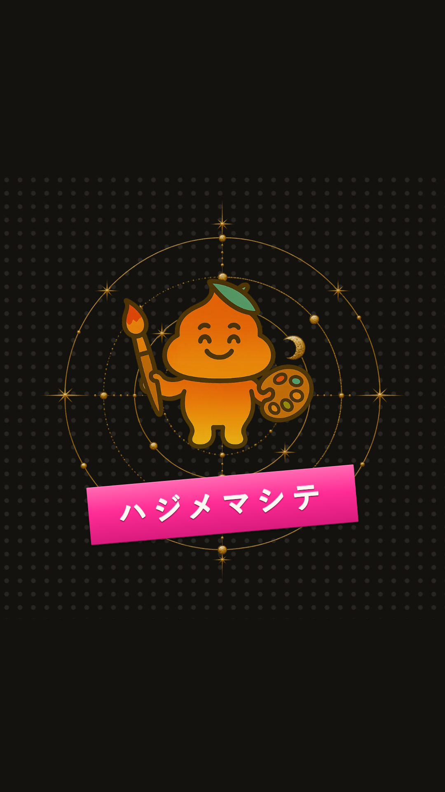
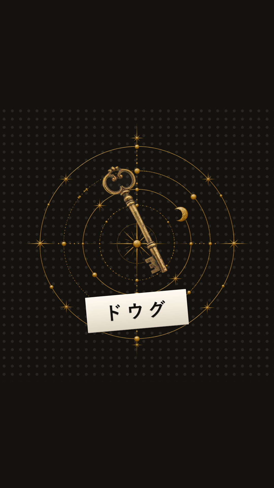
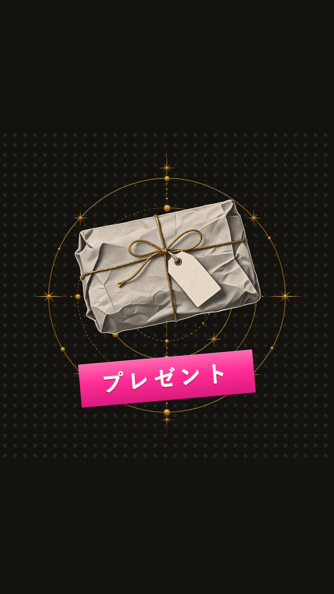
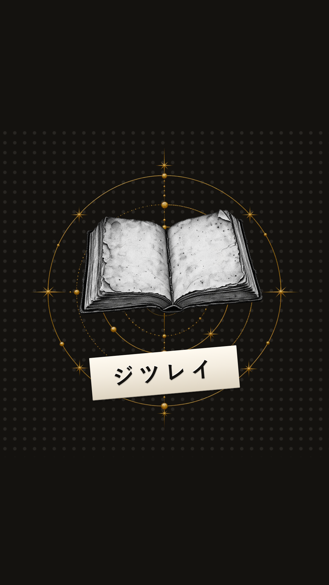
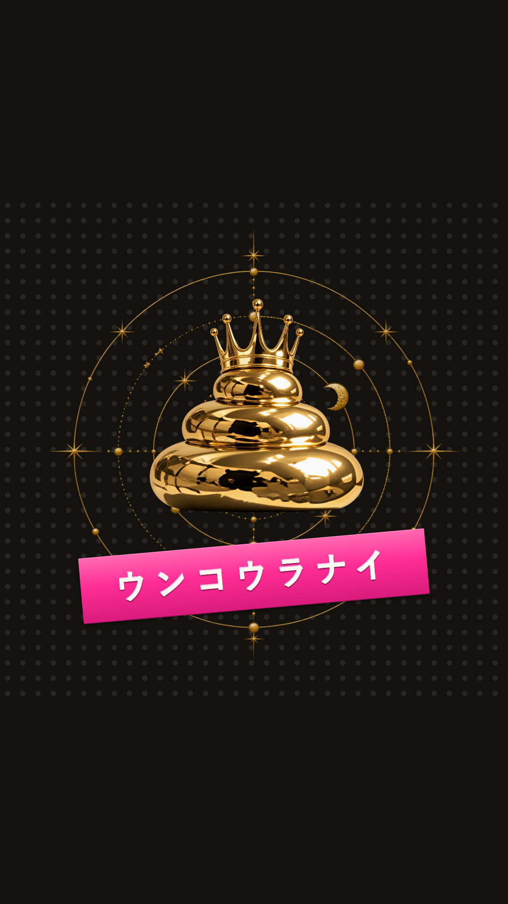
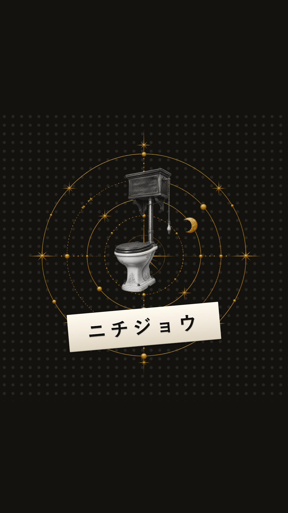

インスタ素材置き場
動画は「保存する」を押して開き、共有ボタンから「ビデオを保存」。画像は長押しして「写真に追加」。文章は「コピー」で写せます。
うんこ占いリニューアル｜動画（リール用）
保存するうんこ占いリニューアル｜カルーセル4枚


自己紹介｜動画（リール・ストーリーズ用）
保存する自己紹介｜カルーセル5枚


自己紹介｜ストーリーズ用5枚


ハイライトの表紙6枚（はじめまして／どうぐ／無料プレゼント／じつれい／うんこ占い／にちじょう）

1枚目を保存

2枚目を保存

3枚目を保存

4枚目を保存

5枚目を保存

6枚目を保存
文章
うんこ占いリニューアル（長いほう）
お久しブリー！！！ ぶりちゃんだよっ！ しばらく静かにしてたんだけど、 そのあいだに、うんこ占いが めちゃくちゃ生まれ変わりましたｗｗ なんかね、急に美術館みたいになった。 彫刻とか月とか出てくる。 でも中身は、ちゃんとうんこですｗｗｗ うんこはね、 どんな自分も受け止めて流してくれる。 だから、あなたはもっと自由でいいんだよ。 生年月日だけで、 あなたの中にいるうんこがわかるよっ 無料診断はプロフィールのリンクから💩 また便器界に遊びにきてね〜！ #うんこ占い #便器界 #UNKOORACLE #占い #無料診断 #リニューアル
うんこ占いリニューアル（短いほう）
お久しブリー！！！ぶりちゃんだよっ！ うんこ占い、生まれ変わりましたｗｗ 見た目は美術館、中身はうんこです。 うんこはね、どんな自分も受け止めて流してくれる。 だから、あなたはもっと自由でいいんだよ。 無料診断はプロフィールのリンクから💩 #うんこ占い #便器界 #UNKOORACLE #占い #無料診断
自己紹介
お久しブリー！！！ぶりちゃんだよっ！ あらためて自己紹介します。 うんこ占いをつくった人で、 占い師さんの道具もつくってます。 ふざけた物を、本気でつくるのが好きです。 占い師さんへ。 診断ページとホームページ、無料で作れます。 プロフィールのリンクからどうぞ💩 #うんこ占い #占い師 #占い師さんと繋がりたい #AI活用 #ぶりちゃんのどうぐや
プロフィールの自己紹介文
💩 うんこ占い、つくりました 🛠 占い師さんの道具も、つくってます 命式ツール／予約とカルテ／ホームページ ふざけた物を、本気でつくる人。 ▼診断ページとHP、無料でつくれます